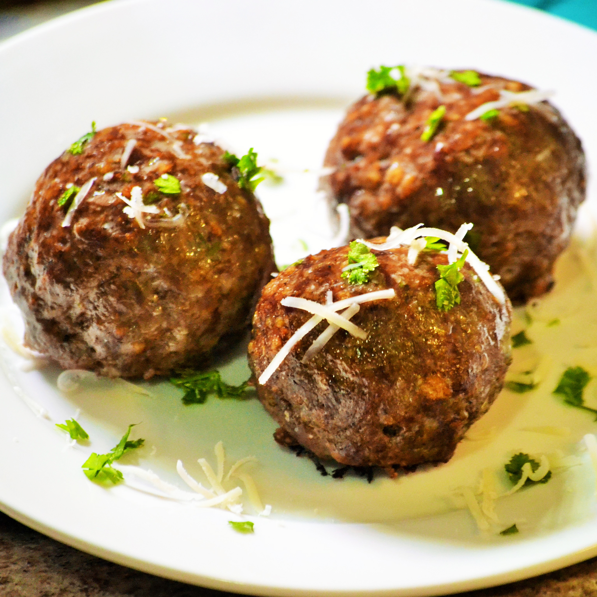

Italian Baked Meatballs

Description
This recipe will show you how to make a pair of delicious Italian Meatballs
you can serve on their own or with your own pasta of choice.
- 1 cup Italian-seasoned bread crumbs
- 1/4 cup grated Romano cheese
- 2 tablespoons chopped fresh parsley
- 1/2 teaspoon salt
- 1/2 teaspoon ground black pepper
- 1/2 teaspoon garlic powder
- 1/2 teaspoon onion powder
- 1/2 cup of water
- 2 eggs
- 1 and a half pounds ground beef
- Preheat oven to 350 degrees F. (175 degrees C)
- Mix bread crumbs, Romano cheese, parsley, salt, pepper, garlic powder, and onion powder together.
- Combine with water and eggs.
- Add ground beef and mix well.
- Roll mixture into balls and place on nonstick baking sheet.
- Bake in the preheated oven until browned, around 30 minutes.